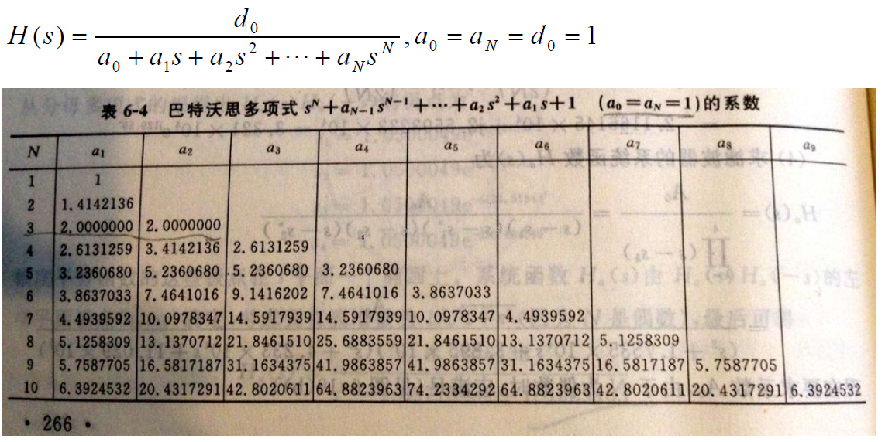
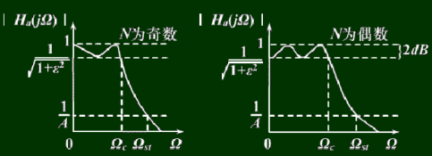
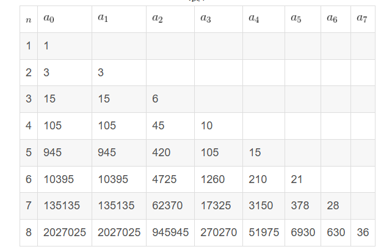
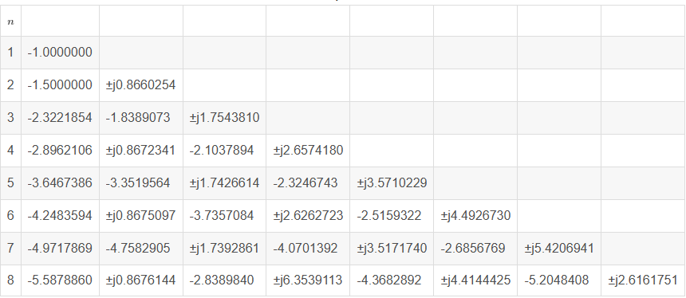
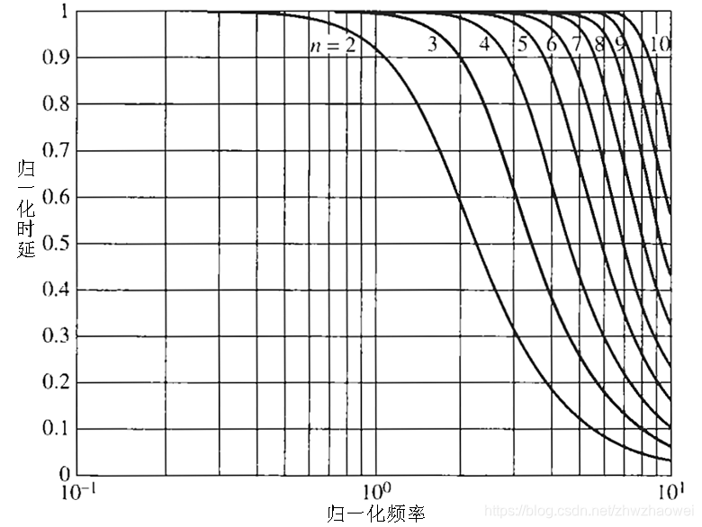
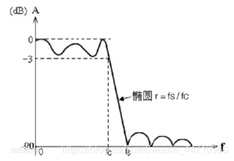

数字滤波器
Table of Contents
数字滤波器
数字滤波器按照最佳逼近特性可以分为巴特沃斯Butterworth，切比雪夫Chebyshev，贝塞尔Bessel，椭圆Elliptic滤波器。按照频带又可以分为低通，高通，带通，带阻滤波器，其中高通，带通和带阻滤波器都可以由低通滤波器由频率变换得到。
低通滤波器
当输入信号频率小于某一截止频率时，低通滤波器能够通过信号，使其保留低频分量，而将高于截止频率的部分信号阻止或者减弱
传递函数为
$$ G(s)=\frac{G_0w_c^n}{(s+w_c)^n} $$这就是 n 阶低通滤波的传递函数，其中 $w_c$ 就是截至频率， $G_0$ 是通带增益或零频增益
高通滤波器
当输入信号频率大于某一截止频率时，高通滤波器能够通过信号，使其保留高频分量，而将低于截止频率的部分信号阻止或者减弱
传递函数为
$$ G(s)=\frac{G_0w_c^ns^n}{(s+w_c)^n} $$这就是 n 阶高通滤波的传递函数，其中 $w_c$ 就是截至频率， $G_0$ 是通带增益或零频增益
带通滤波器
当输入信号在某个频率的范围內时，带通滤波器能够通过该信号，使其保留，对于高于或低于这个频率一定范围的频率的信号阻止或衰减
传递函数为
$$ G(s)=\frac{G_0w_cBs}{s^2+Bs+w_c^2} $$其中 $w_c$ 为目标频率，B 为带通的频宽比，就是 $\frac{带宽}{w_c}$
带阻滤波器
将信号同时作用于低通滤波和高通滤波，再将两个路线中的输出信号求和，就是带阻滤波器
传递函数为
$$ G(s)=\frac{s^n+w_c^n}{(s+w_c)^n} $$其中 $w_c$ 为阻断频率
巴特沃斯滤波器
Butterworth 滤波器因其在通带内的幅值特性具有最大平坦的特性而闻名，是四种经典滤波器中最简单的，巴特沃斯滤波器只需要两个参数表征，滤波器的阶数 n 和 -3dB 处的截止频率
巴特沃斯滤波器的特点是通频带内的频率响应曲线最大限度平坦，没有起伏，而在阻频带则逐渐下降为零。 在振幅的对数对角频率的波特图上，从某一边界角频率开始，振幅随着角频率的增加而逐步减少,趋向负无穷大。一阶巴特沃斯滤波器的衰减率为每倍频6分贝，每十倍频20分贝。二阶巴特沃斯滤波器的衰减率为每倍频12分贝、三阶巴特沃斯滤波器的衰减率为每倍频18分贝、如此类推。巴特沃斯滤波器的振幅对角频率单调下降，并且也是唯一的无论阶数，振幅对角频率曲线都保持同样的形状的滤波器。只不过滤波器阶数越高，在阻频带振幅衰减速度越快。其他滤波器高阶的振幅对角频率图和低阶数的振幅对角频率有不同的形状。
巴特沃斯低通滤波器的幅度平方函数定义为
$$ |H(j\lambda)|=\frac{1}{1+C^2\lambda^{2n}} $$其中 C 为一常数参数，n 为滤波器阶数， $\lambda$ 为归一化低通截止频率
设计步骤
设计巴特沃斯低通滤波器指标
- $w_p$ ：通带截止频率
- $\alpha_p$ ：通带最小衰减，单位 dB
- $w_s$ ：阻带开始频率
- $\alpha_s$ ：阻带最大衰减，单位 dB
计算归一化频率
$$ \lambda_p=\frac{w_p}{w_p}=1\\\lambda_s=\frac{w_s}{w_p} $$当 $\alpha=3dB$ 时， $w_p=w_c$ 为通常意义上的截至频率
根据设计要求求出阶次 n 和参数 C
$$ C^2=10^{\frac{\alpha_p}{10}}-1\\n\geq\frac{\lg(a)}{\lg(\lambda_s)} $$其中
$$ a=\sqrt{\frac{10^{\frac{\alpha_s}{10}}-1}{10^{\frac{\alpha_p}{10}}-1}} $$注意，当 $\alpha_p=3dB$ 时，C=1
利用 n 查表

此时的 $H(s)$ 即为归一化函数
变换成需要的滤波器
低通滤波器： $H(s)=H(\frac{s}{w_p})$
高通滤波器： $H(s)=H(\frac{w_p}{s})$
最终由于幅值原因，可以加上一个对应的增益，由于幅值的平方为 $|H(j\lambda)|=\frac{1}{1+C^2\lambda^{2n}}$，所以归为 1 时，增益为 $\sqrt{1+C^2\lambda^{2n}}$，其中 $\lambda=1$
切比雪夫滤波器
主要是在通带或阻带上频率响应幅度等波纹波动的滤波器
I 型切比雪夫滤波器
在通带上频率响应幅度等波纹波动的滤波器称为 I 型切比雪夫滤波器

II 型切比雪夫滤波器
在阻带上频率响应幅度等博文波动的滤波器称为 II 型切比雪夫滤波器，也叫做倒数切比雪夫滤波器，但是频率截止速度慢，也需要更多的元件
传递函数
$$ H(w)=\sqrt{\frac{1}{1+\varepsilon^2 T_n^2(\frac{w}{w_c})}} $$其中
- $\varepsilon$ 是决定通带内波动幅度大小的波动系数，为小于 1 的正数
- $w_c$ 为规范化的截止频率，可以表示为 $\frac{2\pi f}{f_s}$ 其中 f 为实际的截止频率， $f_s$ 为采样频率
- $T_n(w)$ 是 n 阶切比雪夫多项式
- $A$ 为阻带衰减系数，但是在此并没有出现
通过双线性变换，可以将连续时间域的传递函数转换为离散时间域的传递函数：
$$ H(z)=H(s),s=\frac{2}{T_s}\frac{1-z^{-1}}{1+z^{-1}}\\\Downarrow\\H(z)=\sqrt{\frac{1}{1+\varepsilon^2 T_n^2(\frac{\frac{2}{T_s}\frac{z-1}{z+1}}{w_c})}} $$第一类切比雪夫多项式
$$ T_0(x)=1\\T_1(x)=x\\T_{n+1}=2xT_n(x)-T_{n-1}(x)\\\Downarrow\\\sum_{n=0}^\infty T_n(x)t^n=\frac{1-tx}{1-2tx+t^2} $$第二类切比雪夫多项式
$$ U_0(x)=1\\U_1(x)=2x\\U_{n+1}=2xU_n(x)-U_{n-1}(x)\\\Downarrow\\\sum_{n=0}^\infty U_n(x)t^n=\frac{1}{1-2tx+t^2} $$设计参数
- 通带波动系数 $\varepsilon$，波动系数越大，波动幅度越大
- 通带截止频率 $w_c$
- 滤波器阶次 $n$，为通带内等幅波动的次数，等于通带最大值和最小值个数。n 越大阻带衰减越快，阶数 n 影响过度带的带宽，同时也影响通带内波动的疏密
设计步骤
设计参数
- $w_p$ ：通带截止频率
- $\alpha_p$ ：通带最小衰减，单位 dB
- $w_s$ ：阻带开始频率
- $\alpha_s$ ：阻带最大衰减，单位 dB
计算归一化频率
$$ \lambda_p=\frac{w_p}{w_p}=1\\\lambda_s=\frac{w_s}{w_p} $$根据设计要求求出阶次 n 和参数 $\varepsilon$
$$ \varepsilon^2=10^{\frac{\alpha_p}{10}}-1\\n\geq\frac{arch(a)}{arch(\lambda_s)}\\a=\frac{\sqrt{10^{\frac{\alpha_p}{10}}-1}}{\varepsilon} $$贝塞尔滤波器
定义
贝塞尔滤波器的传递函数为
$$ T_n(s)=\frac{B_n(0)}{B_n(s)} $$所以贝塞尔模拟低通滤波器的幅值特性函数为
$$ |T_n(j\omega)|=|\frac{B_n(0)}{B_n(j\omega)}| $$其中 $B_n(s)$ 为贝塞尔多项式，可以通过递推公式得到，如下
$$ B_0=1\\B_1=s+1\\B_n=(2n-1)B_{n-1}+s^2B_{n-2} $$将其写作一般的 n 次多项式为
$$ B_n(s)=s^n+a_{n-1}s^{n-1}+...+a_0 $$由公式可以得到 $B_n(s)$ 的各项系数，如下图

由上述参数可以计算出贝塞尔幅值相应的极点，如下

性质
贝塞尔滤波器是具有线性相位响应的线性滤波器，在整个通频带具有恒定的群时延

实现
由滤波器的性能指标确定滤波器的阶数 N
贝塞尔滤波器不像巴特沃斯和切比雪夫滤波器，有公式来计算滤波器的阶数，贝塞尔滤波器的阶数只能通过给定的性能指标通过已有的设计曲线查找得到，主要通过时延D和通带衰减来确定阶数 N
计算模拟滤波器参数
贝塞尔滤波器的极点没有简单的计算公式，只能通过数值方法计算出来，所以滤波器系数通过计算零极点得到。也可以采用查表的方式直接根据滤波器的阶数确定传递函数的系数
$$ T_n(s)=\frac{B_n(0)}{B_n(s)}=\frac{a_0}{a_ns^n+a_{n-1}s^{n-1}+...+a_0} $$s 域频率变换
原型低通滤波器可以通过 S 域的频率变换得到模拟低通，高通，带通和带阻滤波器，对于低通到低通的变换，只需要做
$$ s=\frac{s}{\Omega_p} $$得到
$$ T_n(s)=\frac{B_n(0)}{B_n(s)}=\frac{a_0}{\frac{a_n}{\Omega_p^n}s^n+\frac{a_{n-1}}{\Omega_p^{n-1}}s^{n-1}+...+a_0} $$双线性变换
双线性变换将模拟滤波器的传递函数转换到数字滤波器的传递函数。双线性变化法将 s 域的虚轴 映射到 z 域的单位圆上，将 s 域中左半平面的极点映射到单位圆内，是一种保角映射。具体变换方法为用 z 的分式替换 s
$$ s=\frac{2}{T}\frac{1-z^{-1}}{1+z^{-1}} $$带入之后可以得到
$$ T_n(z)=\frac{a_0}{\frac{a_n}{\Omega_p^n}(\frac{2}{T}\frac{1-z^{-1}}{1+z^{-1}})^n+\frac{a_{n-1}}{\Omega_p^{n-1}}(\frac{2}{T}\frac{1-z^{-1}}{1+z^{-1}})^{n-1}+...+a_0} $$最后可以化简为
$$ T_n(z)=\frac{b_nz^{-n}+...+b_1z^{-1}+b_0}{a_nz^{-n}+...+a_1z^{-1}+a_0} $$由差分方程递推计算滤波结果
由上述 z 域的公式，可以得到离散的滤波器的方程
$$ Y(k)=\sum_{i=0}^{n}X(k-i)-\sum_{i=1}^{n}Y(k-i) $$椭圆滤波器
又称考尔滤波器，是在通带和阻带等波纹的一种滤波器（它在通带和阻带的波动相同）。椭圆滤波器相比其他类型的滤波器，在阶数相同的条件下有着最小的通带和阻带波动。

特点
- 椭圆低通滤波器是一种零、极点型滤波器，它在有限频率范围内存在传输零点和极点
- 椭圆低通滤波器的通带和阻带都具有等波纹特性，因此通带，阻带逼近特性良好
- 对于同样的性能要求，它比前两种滤波器所需用的阶数都低，而且它的过渡带比较窄。
- 椭圆滤波器传输函数是一种较复杂的逼近函数,利用传统的设计方法进行电路网络综合要进行繁琐的计算, 还要根据计算结果进行查表, 整个设计， 调整都十分困难和繁琐。
定义
椭圆滤波器的传递函数为
$$ T_n(s)=\frac{B_n(0)}{B_n(\frac{s}{\omega_0})} $$其中 $\omega_0$ 为期望截止频率
设计
由于整个设计， 调整都十分困难和繁琐，使用 matlab 大大简化设计过程
|
|
其中
wp通带0, wp，通带边界频率 $rad/s$ws阻带ws, 1，阻带边界频率 $rad/s$Rp通带最大波纹Rs阻带最小衰减n滤波器的阶数Wn归一化的低通滤波器截止频率，如果阶数与截止频率不是通过上述函数ellipord计算出来的，可以假设截止频率为 $f$ ，则有 $W_n=\frac{2f}{f_s}$
例子
对于一个周期信号 $sin(t)$，周期为 $2\pi$，其中混杂着随机信号 $\in [-0.05,0.05]$，采样周期为 0.1s，设计一个滤波器来使之很好的表示
低通滤波
相对于目标信号来说，随机信号是一个高频的信号，所以阻高频
设定截止频率为 $w_c=\frac{2\pi}{T}=1$，选取适当的 $G_0$ 使信号幅值不变
$$ G(s)=\frac{G_0w_c^n}{(s+w_c)^n}=\frac{G_0 1^n}{(s+1)^n} $$一阶
$$ G(s)=\frac{1}{(s+1)} $$二阶
$$ G(s)=\frac{1^2}{(s+1)^2} $$高通滤波
相对于目标信号来说，随机信号是一个高频的信号，所以需要阻高频，相对来说高通滤波并不是一个很好的选择
但是如果选择截止频率为 $w_c=1$ 那么剩下的信号就几乎是随机的信号了，取通带增益为 1
$$ G(s)=\frac{G_0w_c^ns^n}{(s+w_c)^n} $$一阶
$$ G(s)=\frac{1s}{s+1} $$二阶
$$ G(s)=\frac{1^2s^2}{(s+1)^2} $$最终得到的效果可想而知不咋地
带通滤波
对于目标信号来说，只需要让目标信号通过就好
设定目标频率 $w_c=1$，取通带增益为 1
$$ G(s)=\frac{G_0w_cBs}{s^2+Bs+w_c^2} $$二阶
中心频率 $f_c=\frac{1}{6.28}$ 并且相对来说噪声的周期为 0.1s，频率为 $10$，所以带宽可以是 1，则 $B=\frac{1}{f_c}=6.28$， $w_c=1$
$$ G(s)=\frac{6.28s}{s^2+6.28s+1} $$带阻滤波
对于目标信号来说，尽量阻断噪声就越好
所以设定阻断频率为噪声频率采样频率 $w_c=62.8$
$$ G(s)=\frac{s^n+w_c^n}{(s+w_c)^n} $$二阶
$$ G(s)=\frac{s^2+62.8^2}{(s+62.8)^2} $$实际效果并不是很好，说明噪声频率并非是 62.8s，是一个不确定的数
巴特沃斯滤波
由于噪声为高频噪声，所以通带截止频率可以设置为信号频率 $w_p=1$，而阻带开始频率可以设置为大于信号频率小于噪声频率 $w_s=2$，也就是只接收目标信号。
设置通带最大衰减为 $\alpha_p=3$，阻带最小衰减 $\alpha_s=10$
计算归一化频率
$$ \lambda_p=1\\\lambda_s=2 $$根据设计要求求出阶次和参数
$$ C^2=10^{0.3}-1\Rightarrow C=\sqrt{10^{0.3}-1}=0.9976283\\a=\sqrt{\frac{10^1-1}{10^{0.3}-1}}=3.007131879\\n=\frac{\lg(a)}{\lg(2)}=1.5883881392=2 $$查表
$$ H(s)=\frac{1}{1+1.4142136s+s^2} $$作为低通滤波器为
$$ H(s)=\frac{w_p^2}{w_p^2+1.4142136w_ps+s^2} $$带入为
$$ H(s)=\frac{1}{1+1.4142136s+s^2} $$并且求出幅值为 $\sqrt{\frac{1}{1+C^2\lambda^{2n}}}=\frac{\sqrt{2}}{2}$，所以最终的传递函数乘上一个增益系数 $\sqrt{1+C^2\lambda^{2n}}=\sqrt{2}$，最终得到结果
$$ H(s)=\frac{1.4142136}{1+1.4142136s+s^2} $$切比雪夫滤波器
由于噪声为高频噪声，所以通带截止频率可以设置为信号频率 $w_p=1$，而阻带开始频率可以设置为大于信号频率小于噪声频率 $w_s=2$，也就是只接收目标信号。
设置通带最大衰减为 $\alpha_p=3$，阻带最小衰减 $\alpha_s=10$
计算归一化频率
$$ \lambda_p=1\\\lambda_s=2 $$根据设计要求求出阶次和参数
$$ \varepsilon^2=10^{0.3}-1\Rightarrow \varepsilon=\sqrt{10^{0.3}-1}=0.9976283=1\\a=\frac{\sqrt{10^{\frac{\alpha_p}{10}}-1}}{\varepsilon}=1\\n\geq\frac{arch(1)}{arch(2)}=\frac{0.648054}{0.265802}=2.4381\Rightarrow n=3 $$I 型
$$ T_3(x)=2x^2-1\\\Downarrow\\H(s)=\sqrt{\frac{1}{1+\varepsilon^2(2\frac{s}{w_c}^2-1)^2}}\\\Downarrow \\H(s)=\sqrt{\frac{1}{4s^4-4s^2+2}} $$II 型
$$ U_3(x)=4x^2-1\\\Downarrow\\H(s)=\sqrt{\frac{1}{1+\varepsilon^2(4\frac{s}{w_c}^2-1)^2}}\\\Downarrow\\H(s)=\sqrt{\frac{1}{16s^4-8s^2+2}} $$最终求得传递函数，也可以通过查表法来得到归一化后的传递函数